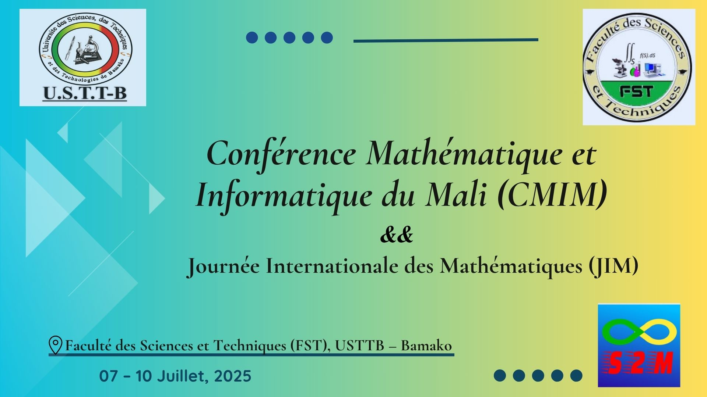
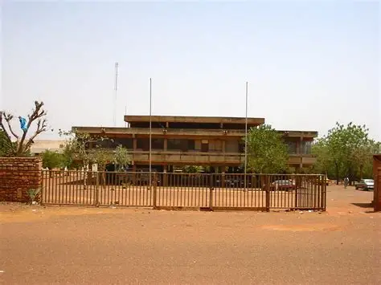
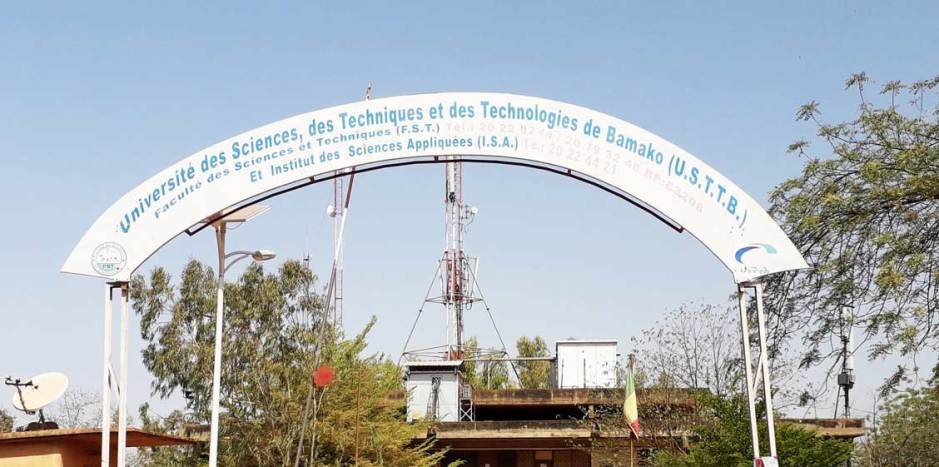
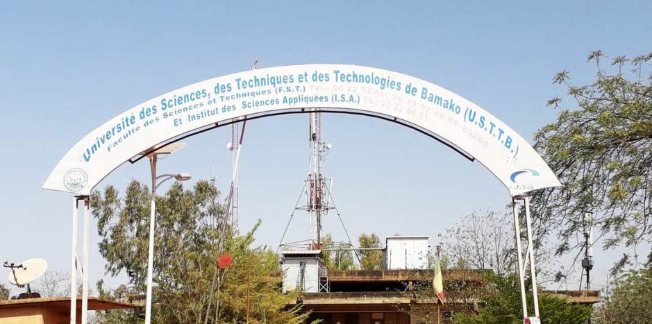
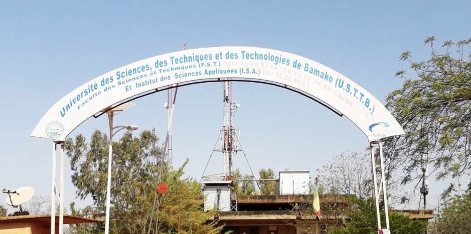
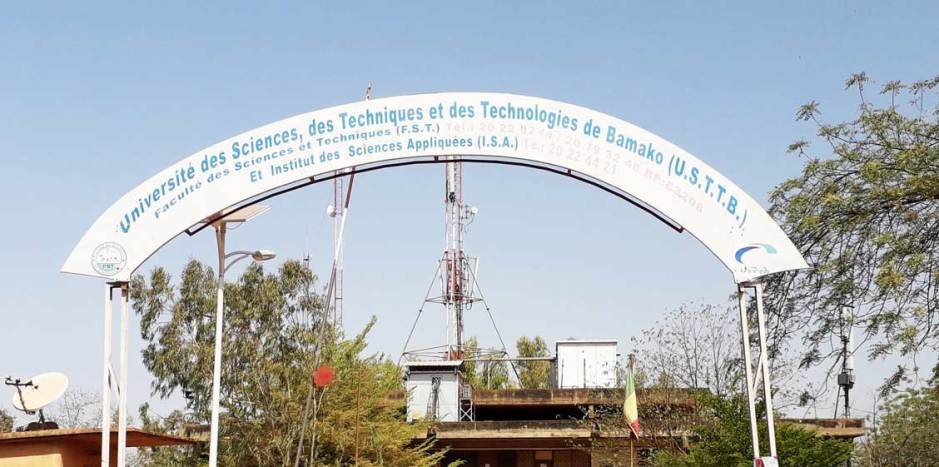

 


Du 7 au 10 juillet 2025 à la Faculté des Sciences et Techniques (FST), USTTB
Célébration conjointe avec la 6ème édition de la Journée Internationale des Mathématiques (JIM)

Le Département d'Enseignement et de Recherche (DER) de Mathématiques et d'Informatique de la Faculté des Sciences et Techniques (FST) de l'Université des Sciences, des Techniques et des Technologies de Bamako (USTTB) organise la première édition de la Conférence Mathématique et Informatique du Mali (CMIM), conjointement avec la Société Mathématique du Mali (S2M).
Cette conférence fait suite aux journées scientifiques organisées traditionnellement chaque année depuis 2018 (à l'exception de 2020 et 2021 en raison de la pandémie de Covid-19). Elle se tiendra exceptionnellement avec la célébration de la sixième édition de la Journée Internationale des Mathématiques (JIM) placée sous le thème "Mathématiques, art et créativité".
Promulguée par l'UNESCO et l'Union Mathématique Internationale (UMI) le 25 novembre 2019, la JIM est célébrée chaque année le 14 mars (3/14 en notation anglo-saxonne, évoquant le nombre π).
La première édition de la CMIM se tiendra du 7 au 10 juillet 2025 à la Faculté des Sciences et Techniques :
| Activités | Date |
|---|---|
| Lancement de l'appel à communications | 29 avril 2025 |
| Réception des propositions de communications | 29 avril - 10 juin 2025 |
| Évaluation des propositions | 11-16 juin 2025 |
| Inscription des participants | 1-5 juillet 2025 |
| Notification aux candidats | 1-5 Juillet 2025 |
| Publication du programme | 24 juin 2025 |
| Tenue de la conférence | 7-10 juillet 2025 |
La CMIM lance un appel à communications à l'intention des enseignants-chercheurs, chercheurs, doctorants et professionnels œuvrant dans les domaines des mathématiques, de l'informatique et des disciplines connexes.
Date limite d'inscription : 5 juillet 2025
La CMIM se tiendra en format hybride (présentiel et visioconférence).
Président : Pr Ouaténi DIALLO (USTTB)
Membres :
Président : Pr Demba BARRY (USTTB)
Membres :
Pour toute information complémentaire :
La CMIM se tiendra à la Faculté des Sciences et Techniques (FST) de l'Université des Sciences, des Techniques et des Technologies de Bamako (USTTB), située sur le campus de Badalabougou à Bamako.
La FST est une composante essentielle de l'USTTB, engagée dans la recherche scientifique de haut niveau dans divers domaines, notamment les mathématiques et l'informatique.
L'USTTB est l'une des principales institutions universitaires du Mali, œuvrant pour l'excellence académique et l'innovation scientifique.
La S2M regroupe les acteurs de la recherche mathématique au Mali et joue un rôle clé dans la promotion des sciences mathématiques.